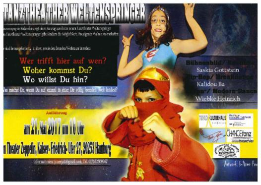

Multikulturelles Tanztheater für Kids
In Zusammenarbeit mit Schulen und Kinder- und Jugendhilfeeinrichtungen begann eine Tanzcompagnie unter der Leitung von Wiebke Heinrich 2013, Kinder aus dem Raum Süderelbe in Kursen zu trainieren.
Das war das erste Tanztheaterprojekt des Kulturhauses. Seit 2014 fördert "Chance Tanz", ein Projekt des Ministeriums für Bildung und Forschung, das inzwischen fünfte multikulturelle Tanztheater.
Verantwortlich für die Umsetzung des Stückes "Weltenspringer" sind die Tänzer Wiebke Heinrich und Kalidou Ba und Saskia Gottstein für Kostüm- und Bühnenbild.
Die Kinder kommen teilweise aus der Erstaufnahme und den Folgeunterkünften für Geflüchtete, die zusammen mit Ortsansässigen das Stück erarbeiten. Damit schlägt das Projekt Brücken zwischen den Kindergruppen und versucht Vorurteile abzubauen, mit denen sie aufwachsen.
Kontakt: Wiebke Heinrich, juneejah@gmail.com
Aufführung der Weltenspringer
am 25. Juni 17 um 16 Uhr
im Rieckhof
Rieckhofstr. 12, 21073 Hamburg
Eintritt frei !

________________________________________________________________________________
Vergangene Aufführungen:
Im Theater Zeppelin am 21. Mai 2017
